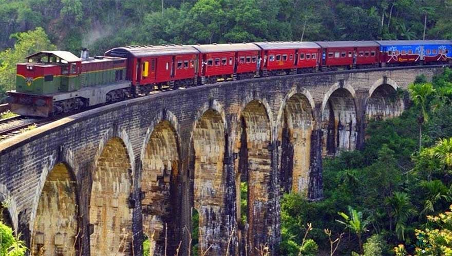

Temple of the Sacred Tooth Relic or Sri Dalada Maligawa
In the Central Highlands, almost dead centre in the little island of Sri Lanka lays Kandy City. The crown jewel of the city is the famed Sri Dalada Maligawa, also known as the Temple of the Tooth. 'Maligawa' literally translates to palace, and the temple is part of the palace complex. The entire complex is over three centuries old at least, and has seen many a king's rise and fall. It has seen bloody wars and peaceful reigns and is one of the most historical places still standing in the island
History
• The Sacred Tooth of Lord Gautama Buddha is preserved in Kalinga, India.
• The Kalinga king Guhasiva in the 4th century AD sends the tooth relic to Sri Lanka with Prince Danta and Princess Hemamala in order to prevent its possession by his enemies who made war.
• The tooth relic is received by the then King Meghavanna in Anuradhapura and enshrined in a 3rd century holy edifice.
• The tooth relic became a symbol of status denoting the right to ascend the throne, and later kings in the kingdoms of Anuradhapura, Polonnaruwa and Dambadeniya built temples for the relic close to the royal residences.
• In the era of the Kotte Kingdom, the temple of the tooth was situated in the toyal city - Sri Jayawardenapura Kotte.
• With the rise of the Kingdom of Kandy the Tooth of Lord Buddha was brought to the city, where it was housed in a two story building by the King Vimaladharmasuriya I. The building did not survive the ravages of time.
• The tooth relic was taken into hiding during the Portugese Invasion in 1603. It was brought back to Kandy by King Rajasingha II almost half a century later, and rehoused in a building identical to the former building.
• The current temple of the tooth was built by King Vira Parakrama Narendra Singha in the early 1700s. There was further construction on the moat and octagonal structure by the later King Sri Wickrama Rajasingha.
• The Temple of the Tooth suffered damage and had to be repaired due to various civil wars in the late 20th century
Folklore
Legend states that after Lord Buddha was cremated following his death, his remains were distributed among the different realms for worship. Apparently of all these remains his four canines were the holiest of all. Of the four canines; the right canine was supposedly taken for worship by the King of Gods, another canine was taken by the king of the land Gandhara (an area which now is Pakistan), while the third was taken by the Nagas (snake people) who worshipped it in a golden shrine room, and the final left canine was given to the King of Kalinga in East India.
The Architecture
• Temple of the Tooth building complex.
• The Main Entrance.
• Moat.
• The Octagon - Pattripuwa.
• Handun kunama.
• The Golden Canopy.
• The Temple of the Tooth Museum - New Palace.
• The Royal Palace.
• The National Museum of Kandy.
• International Buddhist Museum - Old Courts.
• Kandy Lake.
• Queens Bath.
• Diyathilaka mandapaya.
Sigiriya Rock Fortress Sri Lanka
What is Sigiriya ?
Sigiriya is an ancient rock fortress and palace built by King Kashyapa during the
reign of 473 - 495 which is standing majestically 660 feet straight up. It is located
in the northern Matale district near the town of Dambulla in central province of
Sri Lanka. The word Sigiriya or the Sinhagiri means the Lions Rock where you
have to climb up 1200 steps before you reach the Lion Rock Fortress on top of
Sigiriya. There are several platforms that break up the steps and allow for a little
break if you need it. Today Sigiriya rock fortress is one of the most famous
Archeological Treasure and UNESCO named Sigiriya rock as a World Heritage in
1982 under the name “Ancient City of Sigiriya Sri Lanka”.
The Architecture of Sigiriya Lion Rock
This fortified garden city of Sigiriya rock fortress is an exceptional master piece of ancient urban planning / landscape & architecture / construction technology /Exceptional hydraulic engineering & management / ancient fine art with unique harmony between nature and human imagination and all these living examples proved that it was a Well-Planned City & Palace in 5th Century AD. Sigiriya rock fortress is recognized as one of the best-preserved surviving ancient urban sites in Asia from the 1st millennium or simply its a Living Museum. Sigiriya World Heritage Site is versatile and many-faceted appeal, and it is one of Sri Lankas ancient political capitals and Sri Lankas most sensational heritage site.
History of Sigiriya Rock Fortress
Historical research carried out at the site has brought to light evidence to show that the origins of Sigiriya date back to pre-historic times. Situated at the base of the Sigiriya rock of its eastern side, is a monadnock named Aligala (Elephant Rock). In a cave underneath this, excavation have revealed remains of pre-historic human settlements that existed here around 5,500 years B.P. In addition, there is evidence of human habitation in this area, as far back in history as the 9th — 10th centuries B.C. In the 3rd century B.C. a Buddhist monastery had been established at Sigiriya rock fortress. Thirty cave-shelters with drip-ledges, which accommodate monks, have been identified at the base of the great rock so far. In eight of them, details of donations of cave shelters have been inscribed in Brahmi script.
All the principal structures that are found today in Sigiriya, have been erected during the reign of King Kasyapa (A.D. 477 - 495), who chose to make Sigiriya as his seat of administration. According to the eminent archaeologist Prof: Senerath Paranavithana, Sigiriya reflects the sensuousness of a pleasure-loving king, who modeled the city on the mythical Alakamanda of god Kuvera. Indian and Roman coins and pottery belonging to the Sassanian dynasty of Persia (Iran) found in Sigiriya rock fortress as well as the affinity to Persian styles in the creation of pleasure gardens all indicate commercial and cultural relations with foreign countries during this brief period.

Sigiriya Lion Rock Fortress in 7th Century AD
Subsequently however, in the 6th and 7th centuries A.D., Sigiriya ceased to be of political importance and once again became the abode of Buddhist monks. During this period, the cave-shelters with drip-ledges which belonged to the earlier monastic phase were further improved. Additional shrines such as stupa, image house and bodhi tree shrine were constructed. This second phase of the monastic development continued up to the 12th - 13th centuries A.D.19th Century Sigiriya Rock
In the centuries that followed, Sigiriya was totally abandoned, until the 19th century, when it was used as n military out-post of the kings of Kandy. Later, it was a British military. officer, Jonathan Forbes in 1832, who once again brought Sigiriya out of its obscurity, back into historical focus. In 1894, under H.C.P. Bell the Archaeological Department commenced archaeological activities in Sigiriya. Nearly a century later, in 1982, the Central Cultural Fund took over the task, which it continues with great success, to date.

City Planning of Sigiriya Rock - World Heritage
The Lion rock Sigiriya has two fortified precincts where the western precinct encompasses 90 hectares, and the eastern precinct covers 40 hectares. The western area was the royal park area, a symmetrically-designed pleasure garden with elaborate water-retaining structures, as well as surface and subsurface hydraulic systems. It is surrounded by three ramparts and two moats, forming a rectangular area whose inner precincts measure about 700 meters from east to west and 500 meters from north to south.On the other side of the Lion rock Sigiriya, the eastern area appears to have been a ceremonial precinct with a large central pavilion as its only permanent structure. Kasyapa and his royal family lived their lives within these walls. Moving inward from the two precincts in an ever-ascending fashion are a series of boulder gardens and then terraced gardens, leading to the entrance to the Sigiriya rock. Access to the rock is gained via a long passageway that begins on the west side of the terrace gardens, and winds northward along the Mirror Wall to the Lion Platform.
Water Garden & Landscape gardening of Lion rock Sigiriya
Among the significant features of Sigiriya, the Water Gardens are especially noteworthy. Though outwardly the Water gardens appear to be one garden system in Concept, four distinct parts are clearly discernible in its creation, and at present they are called the Water Garden Nos. 1, 2 and 3 and the Miniature Water Garden. The Water Garden No. l has symmetrically arranged four larges L shaped ponds creating an island in the middle. This is considered a special feature found in ancient garden designs and is termed “Char-Bagh" and this specimen in Water Garden No. 1 seems to be the most ancient one extent in the world today. The Water Garden No. 2 has fountains, and hence is also called the Fountain Garden. Two summer palaces flank either side of this Fountain Garden. Visitors will wonder how the fountains were fed with water. The answer lies in the moats built round the summer palaces, connected tó concealed subterranean channels, which feed. the. fountains ingeniously arid unobtrusively. Water Garden No. 3 is located at a higher elevation and has and asymmetrical lay-out, the balance and symmetry of the other sections of the garden system being absent here. . The Miniature Water Garden is a "miniaturized" refinement of the other three garden systems, a kind of micro scale-mode l of die total concept. The inter-connection between the different parts of the Water Gardens and the Overall balance,' symmetry and integration. Thereby achieved is indeed a triumph.
Nelligala International Buddhist Center
An introduction to Nelligala International Buddhist Center
Nelligala International Buddhist Center is a Buddhist temple situated in Muruthalawa village in the Kandy district. Situated on top of a mountain, it is a popular place for sightseeing visitors and tourists due to its sheer beauty and amazing view of the surrounding landscape. It is a modern temple with its construction being commenced in 2015.
Nelligala International Buddhist Center: A religious place of peace and tranquility.
The Nelligala International Buddhist Center is a popular site visited by both Buddhists and people from various other religions. It is a place which brings along peace and tranquility to its visitors. The gold color Buddha statues of the temple creates a unique and picturesque sight to see in contrast with the blue sky above. The temple includes sacred relics of Lord Buddha. The Nelligala International Buddhist Center is a short drive from the Kandy city and consists of many facilities such as wheelchair access in order to help pilgrims to reach the top comfortably.
Visiting the Nelligala International Buddhist Center...
The Nelligala International Buddhist Center is surrounded by breathtaking views and is best visited in the morning and evening. It is a very relaxing place with ample car parking space available for visitors. The top of the hill provides a 360 degree view of the central highlands of the country. Some of the views from the top of the hill are the Hanathana Mountain Range, Alagalla Mountain, Batalegala and Sri Pada Mountain.
Ambuluwawa Tower
Reaching the top of Ambuluwawa one can experience the most amazing views which could sometimes be covered by the ongoing mist. However, once the mist clears off the view can be scary and freak out climbers, especially those who have a fear of heights. Do note that hiking Ambuluwawa is not at all dangerous or risky, but it would not be the ideal kind of adventure for those with a fear of heights. Avoid leaning on the railing to capture photographs especially at the top as this is extremely risky and one could easily slip off from here. Ambuluwawa is a relatively easy hike to do which gives you 360 degree views of the surrounding mountains, forests, rivers and towns.
It is an area richly diverse, with evergreen forests, blossomed flower plants as well creepers and about 200 different kinds of plants from 80 plant families including a variety of medicinal plants. Ambuluwawa is surrounded by many mountains including Piduruthalagala from the East, Bible Rock (Bathalegala) from the West, Sri Pada (Adam's Peak) from the South and Knuckles Mountain Range from the North. Apart from these mountains many other mountains are also clearly visible from here and adds to the beauty of the area. These are the Hanthana Mountain Range, Hunnasigiri Mountain and mountain ranges associated with Algalla and Kadugannawa. There is a cool mountain breeze in the area due to this reason.
The Ambuluwawa Hill and the adjacent forest is designated as a forest reservation which is named as the Ambuluwawa ICC Forest Reservation. The history of the Ambuluwawa Temple dates back to the 13th century during the reign of King Buwanekabahu IV. It is said that the Ambuluwawa Peak was the center of the Gampola Kingdom during his reign. But there is nothing with historical or archaeological values in here.
Ambuluwawa Tower Height
Ambuluwawa is situated approximately 1,965 feet from the level of Gampola town. The Ambuluwawa Mountain stands approximately 3560 meters above sea level. The tower stands at a height of approximately 48 meters and the elderly and kids are not recommended to climb to the top of it. The mountain road runs along the serpentine surrounded by mountain landscapes, cliffs and unique plants, which cannot be found anywhere else. Interesting places to visit include three ponds, a sacred Bodhi tree, water Park, stone Park and garden of herbs.
The Ambuluwawa Biodiversity Center was inaugurated by Sri Lanka's former Prime Minister, Dissanayake Mudiyanselage Jayaratne, popularly known as “Di Mu”, who was born near Gampola. For those going from Colombo, Ambuluwawa is situated 85 km from the capital city.
Sri Pada / Adam's Peak
The climb to Sri Padaya or Adam's Peak Mountain in Sri Lanka's hill country is just a magical experience. It's a magnificent creation of nature that has been respected for centuries. The sunrise here is absolutely spectacular. To witness this breath-taking site, you will have to start the climb at midnight and continue it all night long to be there by dawn. People of all ages in Sri Lanka climb the Adam's Peak Mountain as a yearly pilgrimage, and they never get enough of this amazing experience. Visitors to Sri Lanka admit that it could be the most amazing sunrise view in all of Sri Lanka, or perhaps even in all of Asia...
The top of the mountain has a huge “footprint”. The Buddhists of Sri Lanka believe that it's the footprint of Lord Buddha's left foot. The Hindus claimed that the footprint belonged to Lord Shiva. Its English name - Adam's Peak - stresses
the belief of the Muslims and the Christians that it's the first place that Adam set foot on Earth after leaving Heaven.

All these legends make it all the more exciting for visitors of this amazing place...
Adam's Peak has become a significant pilgrimage place for several faiths, resulting in large numbers of locals making the 5,000-stair climb to the peak at 2,243 meters (7,359 feet) over 5 kilometers, during the months of November to May along a well-lit path. During off season which is from June to October, the area is usually cloudy, rainy and misty and the place is isolated yet some adventure lovers opt to climb Adam's peak during off season, mostly during day time.
Access to the Adam's Peak is possible by 6 trails: Hatton-Nallathanni, Ratnapura-Palabaddala, Kuruwita-Erathna, Murraywatte, Mookuwatte and Malimboda.
The view of sunrise from the peak is magical. All sense of community wash over you as you wait for that anticipated moment of the sun appears over the hills.
Horton Plains National Park
Horton Plains in Sri Lanka, is the coldest and windiest location in the country. It consists of ecosystems such as Montane evergreen forests, grasslands, marshy lands and aquatic ecosystem. At an altitude of 2,100 meters above sea level, Horton Plains spreads across over 3,169 hectares of the highest tableland of the island. In view of the large number of endemic flora and fauna species, Horton Plains was declared a UNESCO World Heritage Site on 30th July 2010.
Ecological importance of Horton Plains
Horton Plains, its surroundings, forests and the adjoining Peak Wilderness constitute Sri Lanka's most important catchment area of almost all major rivers. The plains are also of outstanding scenic beauty and conservation importance, containing most of the habitats and endemic plants and animals representative of the country's wet and Montane zones. The western slopes support the most extensive area of Montane cloud forest surviving in the island. Horton Plains is not merely a destination for nature tourists. Since the rich biodiversity of Horton Plains is still grossly underexplored, it affords invaluable opportunities to those engaged on educational and research activities. Protecting Horton Plains is a call of duty for all Sri Lankans.
Climate of Horton Plains
The Climate of Horton Plains is that of a wet Montane Forest. The average annual temperature of 14-16⁰ Centigrade while the humidity is relatively low at 65%. Though annual rainfall of the highlands is about 2540mm, Horton Plains records over 5000 mm of rainfall annually.
Location of Horton Plains
Horton Plains is spread over the southern ridge of the central highlands in between Nuwara Eliya and Haputale. The tourists approaching Horton Plains from Nuwara Eliya find an entrance point at Pattipola while those approaching from Haputale find an entrance point at Ohiya. Three kilometers drive from either entrance leads to the newly built visitors center. Visitors center exhibits interesting displays on the history of flora and fauna of Horton Plains.
History of Horton Plains
The great plains of the Central Highlands of Sri Lanka was discovered by the planter Thomas Farr in the early 19th century. In 1834 it was named Horton Plains in honor of then Governor of Ceylon (1831-1837) Sir Robert Wilmot Horton. In the year 1969, Horton Plains was declared a nature reserve.In 1988, the reserve was elevated to the status of a National Park.
World's End in Horton Plains in Sri Lanka
On the southern edge of the Horton Plains at an altitude of 2140m is famous World's End, an escarpment that fall sheer 900 meters. The man-made modern irrigation reservoir contained within the national park of Udawalawe brings in a lovely view of the low-lying plains of the southern Sri Lanka. On a clear morning the World’s End affords the view running to the southern coast of Sri Lanka. The panoramic and distant views are bound to get obscured by the mist from around 10am onwards. As such an early morning arrival at the escarpment would stand in good stead. Especially in the rainy months of May to July, the mist is particularly thick.
Udawalawe National Park
Elephants at Udawalawe National Park Sri Lanka
The Udawalawe National Park is famed for its resident population of Sri Lankan elephants (a recognised subspecies of its Asian counterpart), and it is not unusual to see herds gather to feed and bathe at the waterholes while on even the shortest of safaris at the Udawalawe National Park. With approximately 600 to 700 Sri Lankan elephants residing within the confines of this wildlife park, it is an amazing and unforgettable experience to witness these elephants, both adults and young in their natural habitat. The August 2011 census of elephants in Sri Lanka stated that there are approximately 5,800 of these culturally important animals living on the island. The Sri Lankan Elephant is a threatened species.
Mammals at Udawalawe National Park
Udawalawe is home to Sri Lankan wildlife such as the Rusty-spotted Cat, Fishing Cat and the Sri Lankan Leopard. Other species include the Sri Lankan Sambar Deer, Sri Lankan Axis Deer, Indian Muntjac, Sri Lankan Spotted Chevrotain, Wild Boar and Water Buffalo. Presence of the Golden Jackal, Asian Palm Civet, Toque Macaque, Tufted Grey Langur and the Indian Hare have also been recorded. Large numbers of Golden Palm Civets are present here along with 5 species of mice, Indian Bush Rat and 3 species of Mongoose.
Birds at the Udawalawe National Park Sri Lanka
An incredible total of 183 bird species have been recorded as inhabiting the Park, while many others pass through on their migratory routes, making Udawalawe a great place for a memorable bird safari. The avifauna includes large numbers of Warblers, together with the usual low country birds in forested areas, and a variety of raptors. Water birds observed on the reservoir include rare visitors such as the Indian Cormorant and Osprey. Notable endemic species are the Sri Lanka Spurfowl, Sri Lanka Junglefowl, Malabar pied hornbill and the Brown-capped Babbler.
Udawalawe National Park History and Geography
The Udawalawe National Park is in the southern dry-zone of Sri Lanka and spans approximately 31,000 hectares, providing for ample elephant safari opportunities as well as observing the Park's other Sri Lankan wildlife. The Park straddles two Provinces in the South of Sri Lanka and includes the Udawalawe Reservoir. The Udawalawe National Park is renowned for its stunning natural beauty and is second in popularity only to the Yala National Park.
The dry land area of the Udawalawe National Park is about 119 square miles excluding the reservoir, which is approximately 29,000 hectares. The Udawalawe Reservoir is situated within the boundaries of the park, and draws its water from the Horton Plains Reserve, the Peak Wilderness Sanctuary and the Haputale area. The
Nine Arches Bridge

Train tours in the beautiful uplands of Sri Lanka are rated as some of the best train tours in the world. The grand Nine Arch Bridge, also known as The Bridge in The Sky, is a glorious man-made masterpiece, located in the ‘hill country’ of Ella, Sri Lanka.
The magnificent Nine Arch Bridge, located between Ella and Demodara station is one of the awe-inspiring engineering marvels of the early 20th century. It definitely is one of the many reasons behind the above-mentioned recognition of the train tours in Sri Lanka. The surrounding area has seen a steady increase of tourism due to the bridge’s architectural ingenuity and the beautiful greenery in the nearby hillsides.
Built 3,100m above sea level, among the peaks of the Central Highlands, the Nine Arches forms a crossing between the Demodara and Ella Railway stations. This bridge, which is almost 100 years old, has been built with blocks of stone and cement without any strengthening iron or concrete. The giant arches take the bridge on a curved path to link to mountains. The bridge was commissioned in 1921 under the British Government.
According to past stories, the bridge was built with the help of a man called Appuhami who was a famed traditional drummer and devil dancer in the area. One day, while returning home gloomily as he lost a competition, Appuhami was seen by a British official. The officer was extremely frightened by the devilish vision (Appuhami was still in his dance costume) at the beginning, but soon became quite friendly with Appuhami.. Learning that the foreigner was in his area to construct a railway; Appuhami assisted him by supplying him with labour from the local villages.
But things did not go smoothly with the railway construction. They found that they were unable to bridge a large gap between two hills; as there was a marsh in the valley in between. It was not possible to create firm fixing, due to the marshy ground. On learning this, Appuhami requested to take over the bridge project. While he was rejected initially, they agreed later as he had gained their trust with his assistance and friendship. As the story goes, Appuhami started working on the bridge in 1913. He solved the issue of the unstable ground by toppling giant rocks into the space, until a firm bed of rocks was formed. He then created the bridge’s brick columns over this bed and continued with the construction of the bridge.
The methods of constructions used by Appuhami proved to be so insightful and cost-effective that he finished the entire project, which was intended to continue for many years, within a single year at a fraction of the original cost planned.
Over the past couple of years, this hill capital has become a tourist hotspot due to its green scenery, hiking trails, waterfalls, historical caves and the Nine Arch Bridge! The hill side of Sri Lanka has a very peaceful and welcoming vibe about it.
PASIKUDA BEACH
Pasikuda is the pin up of picture postcard beaches thanks to its soft white sand and translucent water. Between May and September, this is the best place in Sri Lanka for a Sri Lankan beach holiday. Most days are cloudless, the ocean is warm, and water clarity is very good which makes it ideal for snorkelling, diving, sailing and a host of other water sports. The curve of Pasikuda bay means that swimming can be enjoyed throughout the year
Pasikuda is a relatively new destination in Sri Lanka for luxury beach holidays and the resorts lining Pasikuda, such as Uga Bay, all benefit from generous manicured gardens, wide-open beachfronts and the most surreal ocean views. The original village of Pasikuda with its guesthouses, hawker stalls and fishing boats infuse local flavor to the south of the bay. During the high season, jet skis, kayaks and sailing boats occupy the water.
Uga Bay sits right in the centre of Pasikuda Bay, and its wide beach frontage is easily identified by the twin palm trees that stand marooned amidst an ocean of milky-white sand. The grounds are lush and private, its rooms stylish, and service is highly personalised. To book a stay at the best hotel in Pasikuda, please click here.
Galle Dutch Fort
The pride of a nation and the country in the eyes of the world is enhanced by its civilization, its culture and its natural beauties. Endowed with these qualifications with a 2500-year-old history supported by ancient archaeological treasures, Sri Lanka is rated as a bio diversity hot-spot of the world.
The historical importance of the Galle Fort is unchallenged. The origins of Galle though lost in antiquity still survive through artifacts which confirm its existence in pre-Christian and Roman eras. Through medieval ages, the Galle Fort emerged as Ceylon's major southern international port attracting Chinese, Indian, Indonesian, Persian, Roman and Arab traders.
The Galle Dutch Fort is a rare historical jewel protected by dark, thick stone walls - with the endless ocean on one side. The roads inside the Galle Fort have hardly changed, like the squares on a chess board crisscrossing in regular patches. Straight and narrow lanes branch in and out inviting the visitor to a delightful walk into the 17th century.
Today's Peddler Street was called “Moorse Kramerstraat” by the Dutch, Lighthouse Street was “Zeeburgstraat and Middelpuntstraat”, Hospital Street as `Nieuwe Lijnbaanstraat and Lijnbaanstraat (New Ropewalk Street), Old Ropewalk Street as Oude Lijnbaanstraat (Old Rope-Walk Street), Church Street as Kerkstraat, Parrawa Street as “Parruasstraat” and Chiando Street as “Chiandostraat”. Through this memory walk one would however miss the 17th century familiar vendors who traded in cinnamon, lace, elephants, tortoise and turtle shell ornaments besides the famous down south sweetmeats like “bondi aluwa” hanging in garlands from the shoulders of vendors.
In 1505 a group of Portuguese sailors led by Don Lorenzo de Almeida arrived in the island and they built the first fortification in Galle on a cliff, jutting out into the sea. It was called the Swart Bastion or the Black Fort in 1520. Later it was fortified and enlarged by the Dutch in 1667.